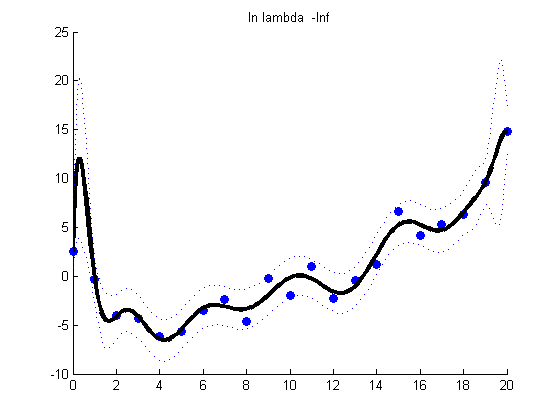
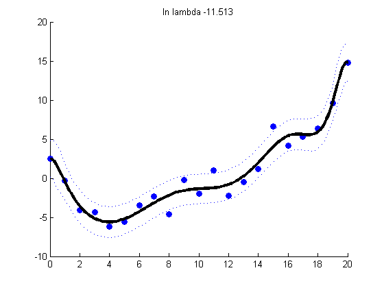
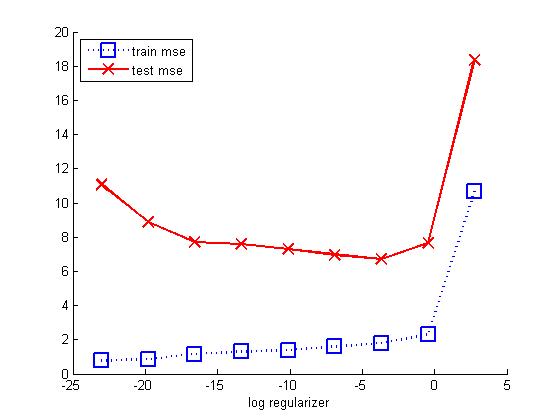
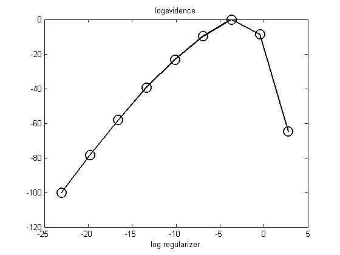

Ridge Regression with Polynomial Basis Expansion
Compare effect of regularizer strength
Contents
Make the data
n = 21; %[xtrain1d, ytrain, xtest1d, ytest] = polyDataMake('-sampling','thibaux','-n',n); xtrain = linspace(0,20,n)'; randn('state', 654321); xtest = [0:0.1:20]'; sigma2 = 4; w = [-1.5; 1/9]; fun = @(x) w(1)*x + w(2)*x.^2; ytrain = feval(fun, xtrain) + randn(size(xtrain,1),1)*sqrt(sigma2); ytestNoisefree = feval(fun, xtest); ytest = ytestNoisefree + randn(size(xtest,1),1)*sqrt(sigma2);
Basis function expansion
deg = 14; [Xtrain] = rescaleData(xtrain); Xtrain = degexpand(Xtrain, deg, false); [Xtest] = rescaleData(xtest); Xtest = degexpand(Xtest, deg, false); modelLS = linregFit(Xtrain,ytrain, 'lambda', 0); fprintf('%5.3f, ', modelLS.w); fprintf('\n'); modelRidge = linregFit(Xtrain, ytrain,'lambda', 1e-3) fprintf('%5.3f, ', modelRidge.w); fprintf('\n');
6.560, -36.934, -109.255, 543.452, 1022.561, -3046.224, -3768.013, 8524.540, 6607.897, -12640.058, -5530.188, 9479.730, 1774.639, -2821.526,
modelRidge =
w0: 0.7440
w: [14x1 double]
Xmu: [1x14 double]
Xstnd: [1x14 double]
sigma2: 5.7184e+003
2.128, 0.807, 16.457, 3.704, -24.948, -10.472, -2.625, 4.360, 13.711, 10.063, 8.716, 3.966, -9.349, -9.232,
Plot regularized fit for various lambdas
lambdas = [0 0.00001 0.001]; NL = length(lambdas); logev = zeros(1,NL); for k=1:NL lambda = lambdas(k); [model, logev(k)] = linregNetlabFit(Xtrain, ytrain, lambda); [ypredTest, s2] = linregNetlabPredict(model, Xtest); sig = sqrt(s2); figure; scatter(xtrain, ytrain,'b','filled'); hold on; plot(xtest, ypredTest, 'k', 'linewidth', 3); plot(xtest, ypredTest + sig, 'b:'); plot(xtest, ypredTest - sig, 'b:'); title(sprintf('ln lambda %5.3f', log(lambda))) end logev
logev =
-Inf -80.3441 -60.3664
  Now compare logev with train/test error on a dense grid of lambdas
lambdas = logspace(-10,1.2,9); NL = length(lambdas); logev = zeros(1,NL); testMse = zeros(1,NL); trainMse = zeros(1,NL); for k=1:NL lambda = lambdas(k); [model, logev(k)] = linregNetlabFit(Xtrain, ytrain, lambda); ypredTest = linregNetlabPredict(model, Xtest); ypredTrain = linregNetlabPredict(model, Xtrain); testMse(k) = mean((ypredTest - ytest).^2); trainMse(k) = mean((ypredTrain - ytrain).^2); end probs = exp(normalizeLogspace(logev)); %bar(probs) figure; hold on ndx = log(lambdas); % 1:length(lambdas); plot(ndx, trainMse, 'bs:', 'linewidth', 2, 'markersize', 12); plot(ndx, testMse, 'rx-', 'linewidth', 2, 'markersize', 12); legend('train mse', 'test mse') xlabel('log regularizer') printPmtkFigure('linregL2PolyVsReg-mse') figure; plot(ndx, log(probs), 'ko-', 'linewidth', 2, 'markersize', 12); title('logevidence') xlabel('log regularizer') printPmtkFigure('linregL2PolyVsReg-logev') 